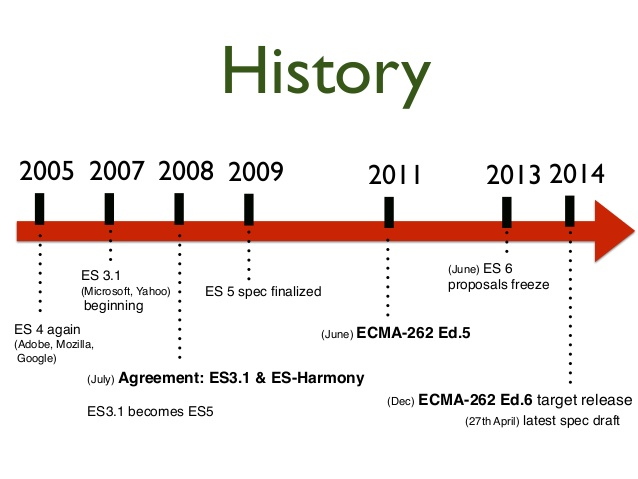

Frontend Introduction
Źmicier Jaraševič
HTML vs XHTML vs XML
Optional end HTML tags: li, dd, p, td and many other
Attribute optimization: checked, disables, required, etc
XHTML is HTML written as XML but stricter
XHTML stands for EXtensible HyperText Markup Language
Goal: emphasize simplicity, generality and usability
For what: documents, data structure, services
Document Type Definition, XML Schema, XSLT
Load and Render
new URL -> request (http) -> DNS -> sending
receiving -> parse HTML -> build DOM
load CSS, parse it, forming CSSOM, apply to DOM
load JS and execute
head/body placement
async/css blocking
minification
HTTP
Hypertext Transfer Protocol
What is it? The foundation of data communication for the World Wide Web
History, versions, structure, alternatives
Methods: GET, POST, DELETE, PUT/PATCH, HEAD, OPTIONS
Security and Encryption
Semantic Web/Page
The Semantic Web provides a common framework that allows data to be shared and reused across application, enterprise, and community boundaries
Meta data for HTML page: keywords, description
Specific attributes: Microformats, RDFa, Microdata
HTML5 elements: article, navigation, main, mark...
<meta name="keywords " content="computing, computer studies, ..." />
<meta name="description " content="Cheap widgets for sale" />
Semantic Web/Page
<div class="vcard ">
<span class="fn ">Mark Watney</span>
<div class="org ">NASA</div>
<div class="adr ">
<span class="country-name ">USA</span>
</div>
</div>
REST API
Representational state transfer
Level 0 - HTTP as a transport system
Level 1 - Identification of resources
Level 2 - HTTP Verbs
Level 3 - Hypermedia as the Engine
Templating
JS: Jade, Handlebars, Underscore, Mustache
HAML, Razor, JSX, Angular, ...
Goals: speed, readable, reusing
<script id="president-template " type="text/template">
{{#presidents}}
<li>{{name}} ({{born}}-{{death}})</li>
{{/presidents}}
</script>
Grid Layout
CSS Grid Layout
Atomic design
Frameworks
SVG
SVG stands for Scalable Vector Graphics
SVG is used to define vector-based graphics for the Web
SVG defines the graphics in XML format
<svg xmlns="http://www.w3.org/2000/svg" version="1.1">
<rect x="25" y="25" width="200" height="200" fill ="lime"/>
<circle cx="125" cy="125" r ="75" fill="orange"/>
<polyline points="50,150 50,200 200,200 200,100" fill="none"/>
<line x1="50" y1="50" x2="200" y2="200" stroke ="blue"/>
Styles applying
Default by browser
External CSS
Internal CSS
Inline styles
reset.css vs. normalize.css
The goal of Reset.css is to reduce browser
inconsistencies in things like default line heights, margins and
font sizes of headings, and so on.
Normalize.css makes browsers render all elements more consistently
and in line with modern standards.
responsive vs. adaptive
Responsive websites respond to the size of the browser at any given point.
Adaptive websites adapt to the width of the browser at a specific points.
UI&UX
U ser I nterface - human–machine interaction
clarity & familiarity
efficiency & concision
forgiveness & responsiveness
U ser eX perience - practical, experiential, affective, meaningful aspects of human–computer interaction
marketing&branding
visual design
usability
float attribute
margin vs. padding
box-sizing
margin overlay
background
vendors' prefixes
-webkit-, -moz-, -ms-, -o-
background: -webkit-gradient(linear, left top, color-stop(0%,rgba(238, ...
background: -webkit-linear-gradient(-45deg, rgba(238,238,238,1) 0%, ...
background: linear-gradient(-45deg, rgba(238,238,238,1) 0%, ...
filter: progid:DXImageTransform.Microsoft.gradient( ...
Solution: autoprefixer / caniuse / statcounter
Preproccessors
JS Paradigms
Prototype-based: inheritance, func as constructor
Functional: high-order function, lambda expressions
Object-oriented: classes, methods, properties
OOP
Inheritance: prototype, constructors, es6
Encapsulation: clojure, es6 properties
Polymorphism: dynamic lang, prototype/es6

Functional
Func as params | High Order Function
Stateless function | Arrow-function
Some input produce some outputs
Pure function | without Side Effects
Iterators
Global Scope
window - browserglobal - node.jsvar, let/const
function scope
decorative constructions: if, for, etc
'this' context
function() -> global scope
new f() -> created object
f: function() -> parent object
() => {...} -> previous scope
apply, call, bind
var g = bind(f, "Context");
Closure
Closures are functions that refer to independent (free) variables.
In other words, the function defined in the closure 'remembers'
the environment in which it was created.
LexicalEnvironment: function params + parent scope
Emulating private methods with closures
Returning functions
function makeAdder(x) {
return function(y) {
return x + y;
};
}
var add5 = makeAdder(5);
var add10 = makeAdder(10);
console.log(add5(2)); // 7
console.log(add10(2)); // 12
'use strict'
function x(p1, p1) //error
delete x //error
pi = 4 //error
with (Math){x = cos(2)} //error
eval ("var x = 2"); //error
+ some "keywords" //error!
ES6 features
Modules
Classes, properties (stage-1)
Arrow-function (lambda expression)
let, const
String formatting
Promises
default + rest + spread (+ destructing)
literals and iterators
async / Promises
Callbacks -> Promises -> Generators (ES6) -> Async/await (ES7)
async function save(Something) {
try {
await Something.save()
} catch (ex) {
//error handling
}
console.log('success');
}
Thank you!
Źmicier Jaraševič


 SASS/SCSS
SASS/SCSS
 LESS
LESS
 Stylus
Stylus
 PostCSS
PostCSS